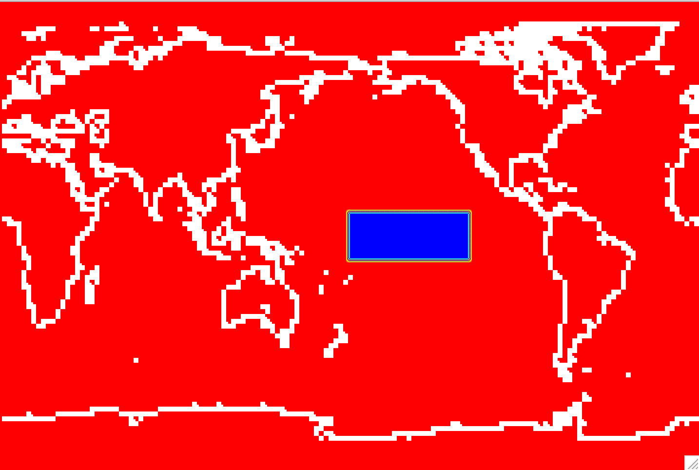

4: Modify sea surface temperature in the tropics#
Change input boundary datasets (Sea Surface Temperature) by increasing its value by 2K in the tropical Central Pacific.
Scientific Motivation: Sea surface temperatures (SSTs) strongly influence atmospheric circulation, precipitation, cloud formation, and tropical convection. In this exercise, you will investigate how the atmosphere responds to warmer SSTs in the tropical Pacific.
Create a case similar to control case but change input boundary datasets (Sea Surface Temperature) by increasing its value by 2K in the tropical Central Pacific.

Figure: Increase orographic height over the western US.
Create, configure, build and run a case called fhist.warmtcp with the compset FHISTC_LTso at the resolution ne30pg3_ne30pg3_mg17 using the same history file output as in the control. Improve the throughput by changing the task layout as in the control case.
The simulation should:
Use the same output configuration as the control case.
Modify the prescribed SST dataset by increasing SSTs by 2 K in the tropical central Pacific.
Produce 3-hourly instantaneous output.
Run for 5 days.
After the simulation completes, compare the results with the control simulation.
Click here for hints
How do I output 3 hourly instantaneous variables?
Use namelist variables:
nhtfrq,mfilt,fincl.For more information, look at the chapter:
NAMELIST MODIFICATIONS -> Customize CAM output
Where do I change the SST dataset?
Look at the xml variable
SSTICE_DATA_FILENAME
Click here for the solution on how to modify the SSTs
Copy the SST file#
The first step is to copy the SST file from the inputdata directory to a location where you can modify it. Create a directory for your modified SST files and copy the original SST file into that directory.
mkdir -p /glade/derecho/scratch/$USER/my_sst
cd /glade/derecho/scratch/$USER/my_sst
cp /glade/campaign/cesm/cesmdata/cseg/inputdata/atm/cam/sst/sst_HadOIBl_bc_1x1_1850_2021_c120422.nc .
You will modify this file to create a +2 K SST perturbation over the tropical central Pacific.
The perturbation region is:
Latitude: 10°S–10°N
Longitude: 180°E–240°E
You can modify the SST file using either a Python script or NCO operators as sown below. Feel free to use any other tool that you familiar with.
Option 1: Modify the SST File with Python#
Here is a clean Python script version using xarray.
Save the following script as:
/glade/derecho/scratch/$USER/my_sst/create_warmtcp_sst.py
#!/usr/bin/env python3
import xarray as xr
# Input and output files
infile = "sst_HadOIBl_bc_1x1_1850_2021_c120422.nc"
outfile = "sst_HadOIBl_bc_1x1_1850_2021_c120422.warmtcp.nc"
# Open dataset
ds = xr.open_dataset(infile)
# Define perturbation region
lat_mask = (ds["lat"] >= -10.0) & (ds["lat"] <= 10.0)
lon_mask = (ds["lon"] >= 180.0) & (ds["lon"] <= 240.0)
# Apply +2 K SST perturbation in the selected region
ds["SST_cpl"] = ds["SST_cpl"].where(
~(lat_mask & lon_mask),
ds["SST_cpl"] + 2.0
)
# Write modified dataset
ds.to_netcdf(outfile)
print(f"Wrote modified SST file: {outfile}")
Then run:
module load conda
conda activate npl
cd /glade/derecho/scratch/$USER/my_sst
python create_warmtcp_sst.py
This creates the same modified SST file:
sst_HadOIBl_bc_1x1_1850_2021_c120422.warmtcp.nc
# Option 2: Modify SST with nco operators
Alternatively, you can modify the SST file using NCO operators.
cd /glade/derecho/scratch/$USER/my_sst
cp /glade/campaign/cesm/cesmdata/cseg/inputdata/atm/cam/sst/sst_HadOIBl_bc_1x1_1850_2021_c120422.nc .
ncap2 -O -s 'lat2d[lat,lon]=lat ; lon2d[lat,lon]=lon' \
-s 'omask=(lat2d >= -10. && lat2d <= 10.) && (lon2d >= 180. && lon2d <= 240.)'\
-s 'SST_cpl=(SST_cpl+omask*2.)' sst_HadOIBl_bc_1x1_1850_2021_c120422.nc \
sst_HadOIBl_bc_1x1_1850_2021_c120422.warmtcp.nc
This creates the same modified SST file:
sst_HadOIBl_bc_1x1_1850_2021_c120422.warmtcp.nc
# Visualize your modification to SST
You could create a file diff_sst.nc with the differences of SST ncdiffand then visualize that file with ncview. You also welcome to use your own tools to visualize your mods to orography.
Create a file
diff_sst.ncwith the differences in SSTs:
module load nco
ncdiff \
sst_HadOIBl_bc_1x1_1850_2021_c120422.nc \
sst_HadOIBl_bc_1x1_1850_2021_c120422.warmtcp.nc \
diff_sst.nc
Look at the
diff_sst.ncwithncview:
module load ncview
ncview diff_sst.nc
Figure: View the increase in orographic height over the western US with ncview.
Click here for the solution
# Set environment variables
Set environment variables with the commands:
tcsh user
set CASENAME=fhist.warmtcp
set CASEDIR=/glade/u/home/$USER/cases/$CASENAME
set RUNDIR=/glade/derecho/scratch/$USER/$CASENAME/run
set COMPSET=FHISTC_LTso
set RESOLUTION=ne30pg3_ne30pg3_mg17
bash user
export CASENAME=fhist.warmtcp
export CASEDIR=/glade/u/home/$USER/cases/$CASENAME
export RUNDIR=/glade/derecho/scratch/$USER/$CASENAME/run
export COMPSET=FHISTC_LTso
export RESOLUTION=ne30pg3_ne30pg3_mg17
# Create a new case
Create a new case with the command create_newcase:
cd /glade/u/home/$USER/code/my_cesm_code/cime/scripts/
./create_newcase --case $CASEDIR --res $RESOLUTION --compset $COMPSET --run-unsupported
# Change the job queue and account number
If needed, change job queue and account number.
For instance, to run in the queue tutorial and the project number UESM0016. You should use the project number given for this tutorial.
cd $CASEDIR
./xmlchange JOB_QUEUE=tutorial,PROJECT=UESM0016 --force
This step can be redone at anytime in the process.
# Increase model throughput
To improve throughput, change the task layout before running case.setup:
cd $CASEDIR
./xmlchange NTASKS=-6
# Setup
Invoke case.setup with the command:
cd $CASEDIR
./case.setup
# Point to the new SST file
cd $CASEDIR
./xmlchange SSTICE_DATA_FILENAME="/glade/derecho/scratch/$USER/my_sst/sst_HadOIBl_bc_1x1_1850_2021_c120422.warmtcp.nc"
# Customize namelists
Edit the file user_nl_camand add the lines:
nhtfrq(2) = -3
mfilt(2) = 240
fincl2 = 'TS:I','PS:I', 'U850:I','T850:I','PRECT:I','LHFLX:I','SHFLX:I','FLNT:I','FLNS:I'
interpolate_output(2) = .true.
interpolate_nlat(2) = 91
interpolate_nlon(2) = 180
This creates a second CAM history stream, h1, with 3-hourly instantaneous output.
You can edit the file with a text editor. Alternatively, you can add the lines using echo:
echo "nhtfrq(2) = -3">> user_nl_cam
echo "mfilt(2) = 240">> user_nl_cam
echo "fincl2 = 'TS:I','PS:I', 'U850:I','T850:I','PRECT:I','LHFLX:I','SHFLX:I','FLNT:I','FLNS:I'">> user_nl_cam
echo "interpolate_output(2) = .true.">> user_nl_cam
echo "interpolate_nlat(2) = 91">> user_nl_cam
echo "interpolate_nlon(2) = 180">> user_nl_cam
echo "">> user_nl_cam
You build the namelists with the command:
./preview_namelists
This step is optional as the script ``preview_namelists`` is automatically called by ``case.build`` and ``case.submit``. But it is nice to check that your changes made their way into:
$CASEDIR/CaseDocs/atm_in
**# Set run length**
If needed, change the ``run length``. If you want to run 5 days, you don't have to do this, as 5 days is the default.
./xmlchange STOP_N=5,STOP_OPTION=ndays
**# Build and submit**
qcmd – ./case.build ./case.submit
___
### **Check your solution**
When the run is completed, look at the history files into the archive directory.
(1) Check that your archive directory on derecho (The path will be different on other machines):
cd /glade/derecho/scratch/\(USER/archive/\)CASENAME/atm/hist ls
As your run is only 5-day, there should be no monthly file (``h0``)
(2) Look at the contents of the ``h1`` files using ``ncdump``.
- The file should contain the instantaneous output in the file ``h1`` for the variables:
float FLNS(time, lat, lon) ;
FLNS:Sampling_Sequence = "rad_lwsw" ;
FLNS:units = "W/m2" ;
FLNS:long_name = "Net longwave flux at surface" ;
FLNS:cell_methods = "time: point" ;
float FLNT(time, lat, lon) ;
FLNT:Sampling_Sequence = "rad_lwsw" ;
FLNT:units = "W/m2" ;
FLNT:long_name = "Net longwave flux at top of model" ;
FLNT:cell_methods = "time: point" ;
float LHFLX(time, lat, lon) ;
LHFLX:units = "W/m2" ;
LHFLX:long_name = "Surface latent heat flux" ;
LHFLX:cell_methods = "time: point" ;
float PRECT(time, lat, lon) ;
PRECT:units = "m/s" ;
PRECT:long_name = "Total (convective and large-scale) precipitation rate (liq + ice)" ;
PRECT:cell_methods = "time: point" ;
float PS(time, lat, lon) ;
PS:units = "Pa" ;
PS:long_name = "Surface pressure" ;
PS:cell_methods = "time: point" ;
float SHFLX(time, lat, lon) ;
SHFLX:units = "W/m2" ;
SHFLX:long_name = "Surface sensible heat flux" ;
SHFLX:cell_methods = "time: point" ;
float T850(time, lat, lon) ;
T850:units = "K" ;
T850:long_name = "Temperature at 850 mbar pressure surface" ;
T850:cell_methods = "time: point" ;
float TS(time, lat, lon) ;
TS:units = "K" ;
TS:long_name = "Surface temperature (radiative)" ;
TS:cell_methods = "time: point" ;
float U850(time, lat, lon) ;
U850:units = "m/s" ;
U850:long_name = "Zonal wind at 850 mbar pressure surface" ;
U850:cell_methods = "time: point" ;
float V850(time, lat, lon) ;
V850:units = "m/s" ;
V850:long_name = "Meridional wind at 850 mbar pressure surface" ;
V850:cell_methods = "time: point" ;
Note that these variables have `cell_methods = "time: point" ` attribute because the output is instantaneous.
</details>
</div>